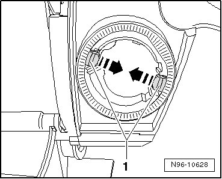
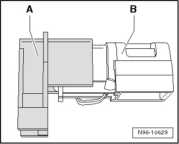
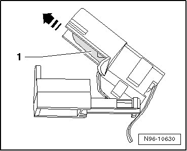

Cigarette Lighter Illumination
Cigarette Lighter Illumination
• On some vehicle equipment levels, socket illumination is via Light Emitting Diode (LED) instead of a bulb. These LEDs are integrated with the illumination housing and cannot be serviced or replaced separately.
• Various versions of illumination housing with bulb exist. One version allows separate replacement of the illumination bulb, and another where the bulb cannot be serviced or replaced separately. In this case, the entire illumination housing must be replaced.
Removing
- Remove socket receptacle, refer to --> [ Cigarette Lighter Socket ] Cigarette Lighter Socket
- Depress retainers - arrows - and remove mounting sleeve with bulb holder.

- Unclip bulb holder from mounting sleeve.
- Separate bulb holder sections - A - and - B -.

- Open bulb holder section - B -.
- Remove bulb in direction of - arrow -.

Installing
Install in reverse order of removal.